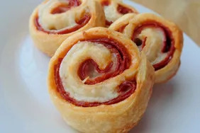

Pizza Pinwheels
Description
This recipe is not only good for kids, but it's good for parties too!
Ingredients
- 1 (8 ounce) can refrigerated crescent roll dough
- 2 cups shredded mozzarella cheese
- 24 slices pepperoni
- 1 (14 ounce) can pizza sauce
Steps
- Preheat oven to 375 degrees F (190 degrees C).
- On a large baking sheet, pinch the 8 crescent roll dough triangles into 4 rectangles. Layer each rectangle with 6 slices of pepperoni and even amounts of mozzarella cheese. Roll tightly lengthwise and slice each into 4 or more pieces.
- Bake in the preheated oven until golden brown, about 12 minutes. Serve with pizza sauce for dipping.